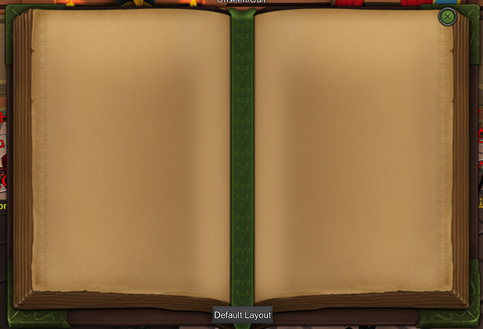

Introduction
It is important as a member of the Blue Dragon to keep up good logs. Good logs can help out the Blue Dragon substantially. This post is for people that are part of the Blue Dragon and don’t know how to begin/write a proper journal. And yes, I see a lot of people struggling to write proper journals.
Here is one example of a bad journal.
It is important to always write an action and then a reaction. For example when I’m playing the Butler. I say I serve wine (action) to someone on Night 1 (N1) and then that they were occupied or were immune to my occupation (reaction).
New players
For new players it is the easiest to use the “Default Layout” This is a button below your journal.
This will give you a Default Layout of what your journal should look like.
On the left page it will put the nights in a row from top to bottom N1 to N16. Almost no game reaches N16. I always half the amount of nights to N8. So you have more space to write and your logs look a little better.
On the right page it will give you the numbers 1 to 16. These are the players in the game. Most games start with 16 people in the game. I mostly write Claims above this and when someone died I remove that person from the list. Like this I get more space to write more information about people that are dead. You should use this page to write who you are suspicious of. And what people claim their role/class is in the game.
Some classes also have day abilities. I write D1 for day 1, D2 for day 2 etcetera. It might be important to write day abilities down in your logbook as well.
Example of how to use the Default Layout Journal:
A lot of people use abbreviations.
This Wiki page will show you all abbreviations used ingame and in the journals.
http://tol.wikia.com/wiki/Mid-Game_Reference
Blue Dragon Actions and reactions
This is a small tutorial on what actions you can write down as a member of the Blue Dragon. And what reactions you can expect. Try to write down as much as possible in as less words as possible, so that people still understand what you mean. 2 types of reactions will come up a lot. Prevention and occupation. I won’t be writing these down because they are fairly obvious. It’s also important to write down if your target was changed or if someone tried to change your target. If there’s a court wizard, this is a way to verify that.
Butler
Day Abilities
Nightshade Wine: Poisoned the king [x]
Night Abilities
Serve wine: Served wine to [x], Occupied [x], Occ [x]
Reactions: Success, occupied, occupy immune/barriered
Concentrated wine: Partied
Court Wizard
Night Abilities
Magic Barrier: Barrier [x], Protected [x], [x] (just a number)
Reactions: Blocked an ability
Tornado: Swapped [x] & [x], Tornado [x] and [x], [x] & [x] (just the numbers)
Death Knight
Doesn’t keep logs, cause you are dead and people can’t see you in the game anymore.
Drunk
Night abilities
Debauchery: Debauch [x], Deb [x]
Reactions: Success, target attacked, nothing happened, occupy immune/Barriered
Happy Hour: HH [x], Happy Hour [x]
Hunter
Night abilities
Wolf Companion: Wolf [x], Attacked [x]
Reactions: Success
Bear Companion: Bear
Reactions: attacked someone, nothing happened
Knight
Night Abilities
Sacrifice: Guarded [x]
Reactions: nothing happened, Attacked someone
Cold Steel: CS [x], Attacked [x], Cold steeled [x]
Reactions: Success
Noble
Day Abilities
not really necessary to write down
Night Abilities
Maid Spy: Spied on [x], Spy [x]
Reactions: no whispers, whispers: copy and paste the important whispers
Snoop: Snooped on [x], Snoop [x]
Reactions: Write down what class, write down important information
Observer
Night Abilities
Follow: Follow [x]
Reactions: [y] > [x] > [z], [y] visited [x], [x] visited [z].
Window Peek: Peek [x]
Reactions: Neutral, Blue Dragon, Cult, Unseen
Paladin
Night abilities
Smite: Smite [x]
Reaction: Success
Test Faith: Test faith [x], check [x]
Reaction: Cult, NS (not suspicious)
Physician
Night Abilities
Heal: Healed [x], Heal [x]
Reactions: healed [x] of nightshade, healed [x] of bleeding, dnr (did not require)
Reanimate: Reanimated [x]
Reaction: Success
Prince
This class is a little weird. You should write N1 – Jail [x] or N1 – Executed [x]
It might also be a good idea to keep up how many people died every night. If it shows that nobody died in 1 night the person you jailed that night must be suspicious.
Day abilities
Imprison
Night abilities
Execute
Princess
Night Abilities
Flirt: Flirt [x]
Reactions: [x] is killer/offensive, [x] is support/social, [x] is special/investigative
Will-o-Wisp: Wisp [x], WoW [x], Will-o-Wisp [x]
Reactions: [y] visited, no one visited
Psychic
Day Abilities
Not necessary to write down
Night abilities
Link Minds: Link [x], Linked [x]
Success: write down what class they are, other important information
Sheriff
Day Abilities
Scout: Scout [x], Scouting [x]
Reactions: [x] is unseen
Night Abilities
Expert Investigation: Check [x], Inv [x], Investigating [x]
Reaction: [x] is unseen, NS (not suspicious)
Surveillance: Surveillance
Reactions: [y] visited you, no one visited